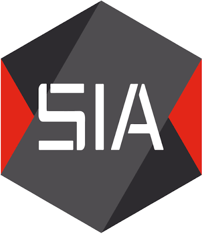

Administrateur Système Réseau (Stage)

SIA (BDE INSA LYON) - VilleurbanneJanv. 2026 — Fév. 2026
- Migration de postes Windows vers Linux (double boot, configuration réseau, permissions, logiciels, tests de compatibilités).
- Création & Configuration d'une ferme Proxmox sur serveur physique : Réseau Bridge, LXC VPN Twingate, VM Wazuh (supervision/sécurité), VM backup, VM menu-fetcher.
- Refonte des scripts de backup via GitLab : automatisation cron, politique de rétention (rotation, purge), tests de restauration et serveurs.
- Documentation technique, tests de serveurs physiques et reventes de switchs.